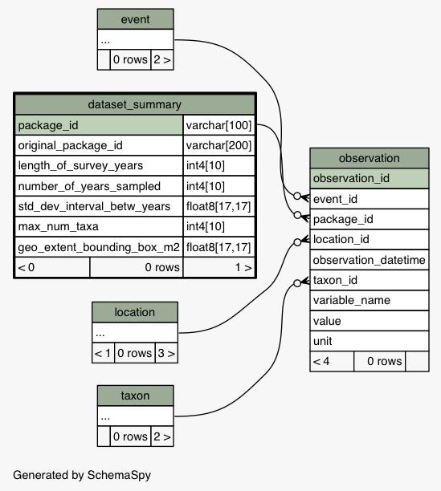

| Table edi_sandbox.ecocom_dp.dataset_summary The dataset_summary table contains summary statistics that are calculated from the observation table.
|
Generated by SchemaSpy |
| ||||||||||||||||||||||||||||||||||||||||||||||||||||||||||||||||||||||||||
Table contained 0 rows at Tue Jun 20 15:19 PDT 2017 | ||||||||||||||||||||||||||||||||||||||||||||||||||||||||||||||||||||||||||
Indexes:
| Column(s) | Type | Sort | Constraint Name |
|---|---|---|---|
| dataset_summary_id | Primary key | Asc | dataset_summary_pk |
|
 |